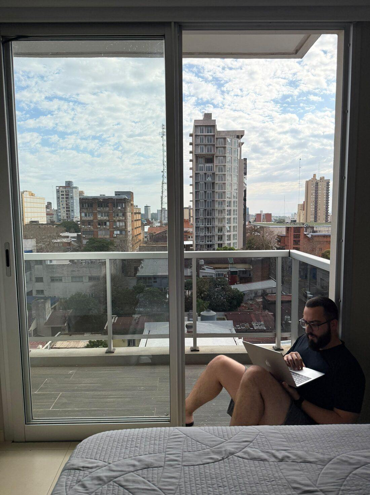

Tráfego pago & vendas
Juliano Streda
Quem sou eu
- 8 anos de experiência em vendas
- 5 anos como gestor de tráfego pago
- 4 anos como empresário no ramo Apple
Hoje ensino empreendedores a fazer o tráfego da própria empresa, gerando economia para o caixa e autonomia na hora das escolhas.

Comecei a aprender sobre vendas enquanto panfletava e batia de porta em porta vendendo internet para um provedor local no interior do Rio Grande do Sul. Percebi que pessoas compram de pessoas e que todo mundo gosta de atenção.
Abri meu próprio negócio em casa, como a maioria dos brasileiros corajosos — e hoje a minha loja de produtos Apple já faturou mais de R$2,4 milhões em 4 anos. Junto com a loja veio a necessidade de gerar demanda, e foi aí que eu aprendi a habilidade dos anúncios online, mais conhecido por você como tráfego pago.
Hoje compartilho com empreendedores tudo que aprendi ao longo desses 8 anos de experiência entre venda e tráfego pago.
Mas agora me diz aí, como eu posso te ajudar?
Escolha seu caminho
Quero aprender tráfego pago para meu negócio
2 aulas ao vivo, individuais, do zero até os primeiros clientes.
Começar → Gestão de tráfegoContrate meu serviço
Deixe seu tráfego pago nas minhas mãos.
Começar →